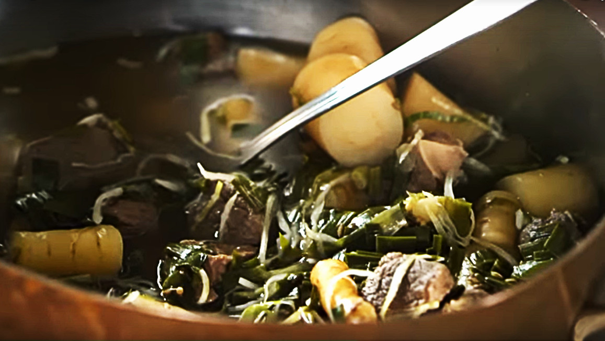

Skause: Meat Stew
Skause, mortals, is a dish of great significance in the halls of Asgard. It is a stew that dates back to the time of the gods, and its hearty and nourishing qualities have sustained warriors and heroes for ages. This divine dish is made with a variety of meats, as well as potatoes, carrots, onions, and a secret blend of seasonings known only to the most skilled cooks. The stew is often accompanied by flatbread or boiled potatoes, and it is a perfect meal to savor on a cold winter's night. Skause has been passed down through generations of mortals, and it remains a beloved and comforting meal that warms both body and soul. The version before you is an extra special treat full of venison, hearty vegetables and savory aromatics.
Ingredients
- 1 pound bone-in venison, cut into 1-inch pieces
- ½ pound bone-in reindeer meat, cut into 1-inch pieces
- 4 teaspoons kosher salt, plus more
- 8 medium parsnips, cut into 1-inch chunks
- 5 medium white carrots, cut into 1-inch chunks
- ½ head green cabbage, shredded
- 100 grams ramsons, chopped
- 1 tablespoon fennel seeds
- 1 tablespoon mustard seeds
- 1 tablespoon dill seeds
Directions
- In a large pot, combine venison, reindeer, and salt.
- Cover with water.
- Bring a to a boil over high heat, then reduce to a simmer and cook gently until tender.
- Skim off any scum that floats to the surface.
- Remove the pieces of meat from the broth.
- Pull off the bones and return the meat to the broth.
- Add all the vegetables and spices to the pot.
- Taste and add salt as needed.
- Simmer until vegetables grow tender.
Nutrition
Curabitur ullamcorper ultricies nisi. Nam eget dui. Etiam rhoncus.